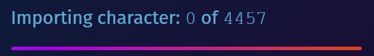
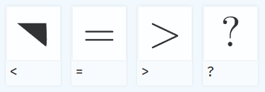
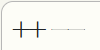
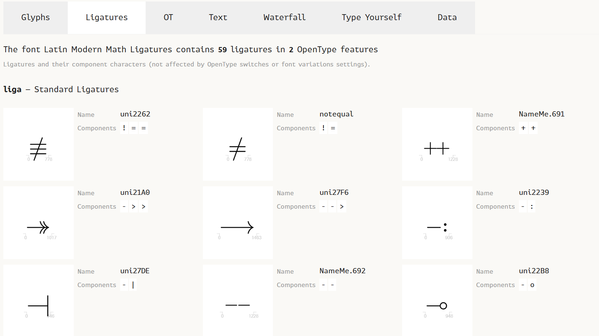
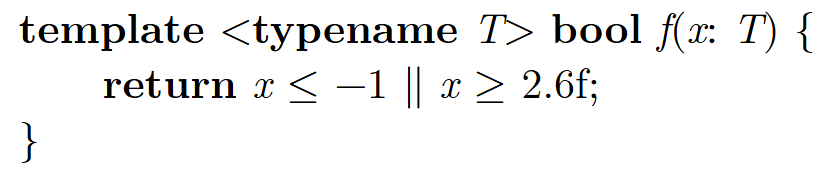
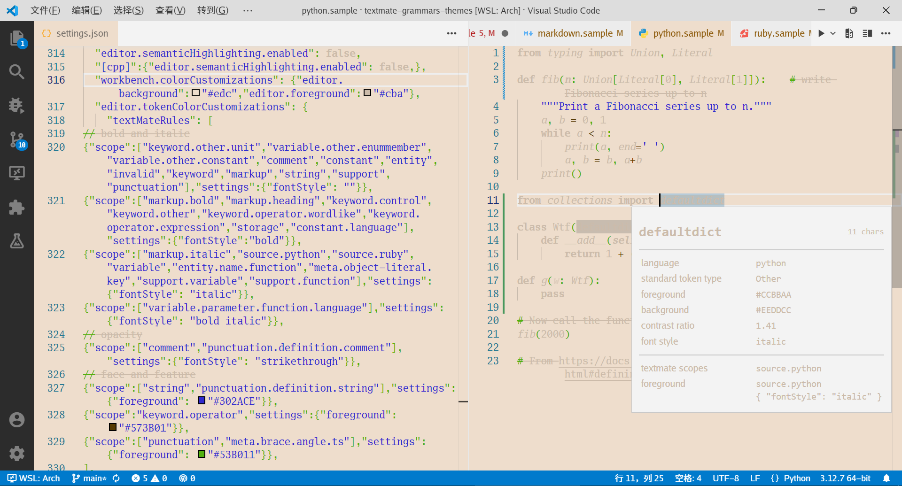

我想要在网页上做出像CWEB那样的代码排版效果，但同时又能正常复制出和搜索到代码原文。
这本质上只是把代码高亮原本的颜色样式改成加粗、倾斜、打字机字体。!、==、>=、&&显示为¬、≡、≥、∧是近年来经常见到的把连字应用在代码上的技巧。（不过我不打算添加像¬和∧这么语义化的连字，因为这会导致人工视觉识别错误的危险。）即使不考虑连字，符号也需要特制的字体，因为一般的字体中ASCII符号为正文优化，例如-显示为连字符，*在高处。以上这些效果实现起来应该并不困难。
事情果真如此简单的话，也就不会有本文了。
现在流行的JavaScript高亮库有三：highlight.js、Prism、Shiki。highlight.js和Prism的语法定义都会直接略过代码中通常不作高亮的部分，包括标识符和（highlight.js的场合）符号，以减少元素数量。Shiki是个需要WASM的重量级库，因为原本的库并非面向网页设计，较早版本只能直接指定具体色值，而直到现在也不能正常通过CSS直接指定样式，而必须用变量迂回指定颜色，很不符合Web平台精神。
标识符没有span包裹的话，就无法设其为斜体。Prism中可以把所有文字都设置为斜体，然后把有span的部分重设为正体。这是我在为salenzo.readthedocs.io编写样式时采用的方法，当时相当痛苦地调了好久，才把C系语言的样式调到位。highlight.js就不行了，因为标识符和符号都没有span，不可能区分样式。
把这些样式搬来，换成Latin Modern字体，字母部分就基本解决了。接下来尝试定制带连字的符号字体。
说到制作字体就不得不提活全家软件FontForge，卡，慢，丑，崩，bug。好多年前我用过那么几次，对它的印象极差。可没办法，功能全面的开源字体制作工具仅此一家。
但现在，我的需求并不复杂。字距调整（kern）和连字（ligature）都是英文字体必备的效果，体验一下功能不那么强大的软件或许也不错，能不用FontForge还是别用了。于是，我打开了Glyphr Studio。
导入Latin Modern Math字体时，进度总量上升又下降，然后再上升又下降，最终在仍处于0 of 几千的时候，进度条以我无法理解的奇妙的方式走完了。光导入就花了好几分钟。因为字符数量太多，系统无法自动保存。虽然确实有很多符号，可这是个英文字体啊？不至于吧？
然后我就看到了这一幕：
再见，我回到FontForge了。
唉，FontForge真难用。所有操作都很别扭。按住Shift就会非常卡。VcXsrv里，按一下键等于按三下，用着用着就不知道多出来什么神秘快捷键自动生成的东西，也不知道怎么删掉，越删越多，回退版本解决了问题。交换两个字符后，生成的字体文件依然是交换前的样子，怎么都想不出哪里操作不对，重启解决了问题。这是bug吧，绝对是的吧。
不知道为什么，做出来的字体的减号在特定缩放等级下呈现为空心。
检查了一下字形，也没有发现加号和减号有什么不同。Chrome和Firefox都有这个问题，但大概是因为在Windows上底层都用DirectWrite渲染。“可能是渲染器bug。”我想。又不是看不见，有的人就喜欢搞这么虚的字体。
直到我在导出时看到警告：减号有轮廓重叠。不知道操作了什么导致了复制粘贴，粘贴在原位，两个相同位置和大小的轮廓抵消，渲染出描边是误差。有时在别人的网页上看到这种神秘发虚的字体，读起来很费劲，现在想来，可能是靠误差显示出字的。
我把能用ASCII表示的符号基本都加上了连字，还照着cwebmac.tex中的定义做了++和−−。使用FontDrop!可以看到这些信息。
我还专门做了字体特性：作为运算符，<和>应显示为<和>；作为括号，<和>应显示为⟨和⟩。CWEB中，C++模板参数的括号也确实如此显示。Prism中，运算符类名为operator，而括号属于punctuation，这样就能区分了……
并不是。
没有斜体矫正确实不协调，但更引人注目的问题是模板参数里的<和>确实被Prism标成了运算符。是的，运算符。
倒也不是不能理解，毕竟就连C++编译器也曾有很长一段时间搞不清楚>>是运算符还是括号，基于正则表达式的Prism就更难确定了。我试了一下，就连Vim和装有C/C++扩展的VSCode也未能幸免。
有时候感觉挺无助的。代码高亮也不能乱涂色啊！如果我出本全是未着色代码的书，是不是可以叫它《秘密花园》——想怎么涂就怎么涂？
不过我发现，Vim和VSCode里的TypeScript均无此问题，于是Shiki高亮的TypeScript也无此问题。相比之下，Shiki至少还有正确高亮的希望，于是我开始尝试把这套Prism CSS主题迁移到TextMate。换上Shiki后，站点生成速度变慢了不少，但若如此能开启选择高亮的准确性的分支，那就这样吧。
我没有macOS电脑，Shiki也要求JSON而非plist格式，方便的主题制作方法是在Visual Studio Code的editor.tokenColorCustomizations偏好设置项里的textMateRules属性写规则，使用“开发人员：检查编辑器标记和作用域”命令显示语法栈，配合一个无语法高亮的主题（比如Empty Themes）来预览。用一个包含各种语言代码块的Markdown文件，就能在排除语义化高亮设置干扰的同时，同时预览多种语言。我把我使用的高密度且刁钻的代码片段放在了本站的Hypertext Specimen页面。
TextMate主题不支持设置字体，更不支持设置字体特性。用Shiki中的办法，先设个颜色，输出HTML的时候再代换回CSS类。
TextMate语法提供variable类，可用于应用斜体。运算符被分在了关键字类别下，我觉得很莫名其妙。真正的关键字运算符（如new）在C++里称作keyword.operator.wordlike，而在C#和JavaScript里称作keyword.operator.expression。
以上都是些小问题，但有些语法文件编写不当，导致正确高亮难以进行。JavaScript设定了括号字符本身为meta.brace类，这不符合meta类的含义（参照TextMate语法的说明，应该把整个括号都设为meta.brace），设置它的样式会导致其他正确使用meta.brace类的语言（如Wolfram）被错误高亮。这个问题在7年前的语法文件中就存在，主题针对这个范围实施高亮，现在已改不动了。
该来的还是要来的，重量级的事还是发生了。C++和TypeScript基本调整完毕后，我打开Python看看效果，发现变量名都没有样式。检查发现，Python中的变量名、包名，全都什么类也没有，就只有顶层的source.python！Ruby也是如此。我只得回应以对待Prism一样的手段：设置所有source为斜体，然后把其他记号设为正体。
写CSS时为优先级抓狂，写TextMate主题规则依旧为优先级抓狂。TextMate主题的优先级规则比CSS更进一步，同优先级的规则应用顺序与编写顺序无关，甚至不可预知。样式系统到底为什么不肯把编写顺序当作优先级，非要自己随便定义一套既不好用又不好做的顺序？
string wins over source.php when the scope is source.php string.quoted.
string.quoted wins over string.
text source string wins over source string.
TextMate主题不仅继承了CSS打架的优先级策略，还继承了属性不够分离的特点。粗体、斜体、下划线、删除线的组合互斥，这正是所有基于TextMate语法的编辑器都无法正确高亮Markdown中的粗斜体文本的原因。
CSS的问题正在被一点点解决：级联层尝试兼容地允许人为指定优先级；transform、font-feature-settings等不应合并的属性也被拆开了。TextMate已经20年了，依然没人想在代码高亮上做什么新鲜文章，它的问题也就长久留存。翻阅TypeScript语言定义仓库中不会修复的问题列表，可以看到许多因TextMate语法文件限制而无法完成的效果。许多时候，为了计算效率，不得不牺牲显示正确性，这种不正确之处又因其只带来错误染色的微妙性被轻易地无视。
必须承认，语法高亮是一个很小众的领域，但也是一个影响范围广大的领域。无论是历史上的语义化高亮尝试，还是现在集成到LSP中的语义化高亮，编辑器内着色的正确性已经得到了提升。但除着色之外，除编辑器之外，语法高亮本还应能做到的事情还远没有结束。
TextMate跟Prism等本质上并无很大不同，更准确只是因为它被用在编辑器中，得到修正的机会更多而已。一车正则表达式是有极限的，所以CodeMirror 6上了真格解析器Lezer，已然成为语法高亮最准确的编辑器。它能正确解析C++和TypeScript中的>>、JavaScript中的{}/i/i（取决于处于表达式还是语句上下文中，{}可能是空对象或空块，/i/i可能是除法或正则表达式）、Python中的@lambda（作为装饰器的匿名函数）。
不使用Lezer的语法树和增量解析能力的话，只当成高亮库来用也完全没问题，CodeMirror网站上文档中的代码当然就是如此实现高亮的。只是因为语法定义也是真格的，它支持的语言还很少。我经常会在文章中插入一些奇奇怪怪的语言的代码，所以没有考虑Lezer。如果只使用主流语言的话，它也是很好的代码高亮的选择。